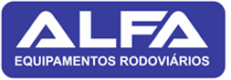

PEDIR ORÇAMENTO ›Origem
Extraí as cores de logo2.png com Pillow (contagem de pixels). O logo tem só duas cores: azul índigo #373C9D (HSL 237° 48% 42%) e branco. Não há vermelho nem segunda cor de marca, então o "vermelho incandescente" da referência vira um azul cobalto saturado da mesma matiz. Como pede o brief, o destaque usa o amarelo #FFC400.
#373C9D#FFFFFF#232894Tokens
--alfa-primary #061CE0--alfa-primary-deep #040B6C--alfa-primary-glow #5C77FF--alfa-accent #FFC400--liquid #00A3FF--fuel #FF9A1F--ink #0B0B0C--paper #F4F4F2--steel #C9CED6Regra de texto: sobre --alfa-primary, use sempre branco (9.33:1). --ink dá só 2.11:1 e fica proibido. O amarelo também passa sobre o azul (5.84:1), então "QUILÔMETRO." em amarelo atende AA.
Tipografia
Qualidade e segurança na fabricação, garantindo o transporte e preservando a qualidade do produto. Projeto, fabricação, montagem e manutenção sob medida para cada cliente.
Decisão pendente
O brief pede gotas de água em #00A3FF, mas agora o fundo do hero também é azul. Por isso a água se perde na cena. Sugiro um ciano mais claro com brilho branco, que continua lendo como "água" e se destaca do cobalto.
Para aprovar
#061CE0, mesma matiz do logo e saturação 95%. Se preferir algo mais perto do índigo original, eu reduzo para ~80%.#FFC400 (o logo não tem segunda cor).